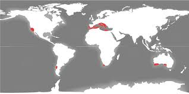

Raksturojums
Mūžzaļo cietlapju mežu un krūmāju zona atrodas tikai piecās pasaules vietās - ap Vidusjūras piekrasti, centrālajā Čīles daļā, Dienvidāfrikā, Kalifornijā un Austrālijas dienvidos. Te ir daudz kūrortu.

Ģeogrāfiskā izplatība
Mūžzaļie cietlapju meži un krūmāji ir iezīmēti ar sarkanu.Klimats
Šajā dabas zonā ir mērens klimats ar maigām, mitrām ziemām un sausām, karstām vasarām. Vidējā gada temperatūra ir ap 15-20°C.
Augsnes
Augsnes parasti ir akmeņainas un smilšainas, ar mērenu auglību. Cilvēki audzē apelsīnus, citronus, persikus, vīnogas.
Raksturīgākie augi

Raksturīgākie dzīvnieki
Vidusjūras krastos dzīvo Ibērijas lūši, makaki un leopardi, kas brīvā dabā pasaulē ir palikuši ļoti maz - tikai ap 250 īpatņiem.

Cilvēku nodarbošanās
Cilvēki šajos reģionos bieži nodarbojas ar olīvkoku un vīnogulāju audzēšanu, kā arī tūrisma attīstīšanu.